News
October Inks!

10/04/14
I'm currently making pen and ink drawings the entire month of October for "October Inks". Check my progress here on my Illustration Series section "October Inks".
Zombie Shark Tank Featured on DBH!
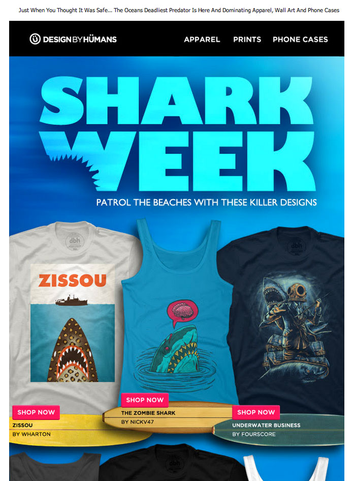
08/12/14
My piece "The Zombie Shark" was featured on Design By Human's e-mail blast for shark week!
Shark Suit Dog Featured on Redbubble!
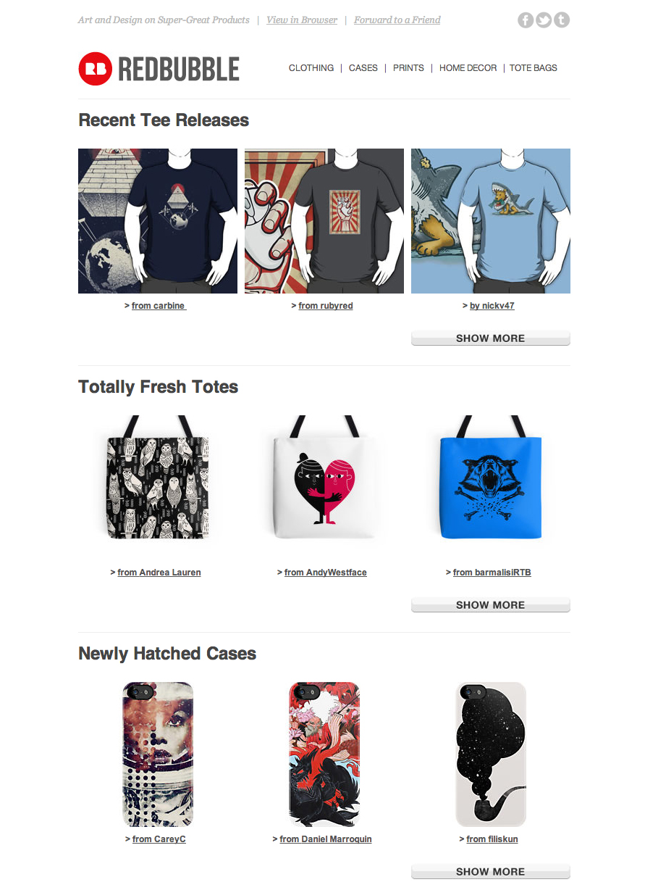
08/12/14
My piece "The Shark Suit Dog" was featured on redbubble's e-mail blast!
Lumbermancer Grey added to my stores

06/08/14
The Lumbermancer (Grey)
Posted a grey variation of this illustration to Society6 and Redbubble, check it out!
Purchase a print on Society6.com | Purchase a print on redbubble.com | Like this on Tumblr

05/29/14
Shark Suit Dog
The Shark Suit Dog takes his job VERY seriously. Pick up a print:
Purchase a print on Society6.com | Purchase a print on redbubble.com | Like this on Tumblr

05/29/14
Mr Eye
A piece I finally got around to finishing that I meant to sub to Threadless' "Original Monsters" challenge. Pick up a print below:
Purchase a print on Society6.com | Purchase a print on redbubble.com | Like this on Tumblr

05/29/14
Bad Day Log II
This little log is really having a crummy day. Pick up a print:
Purchase a print on Society6.com | Purchase a print on redbubble.com | Like this on Tumblr
Bad Day Log featured on Redbubble!
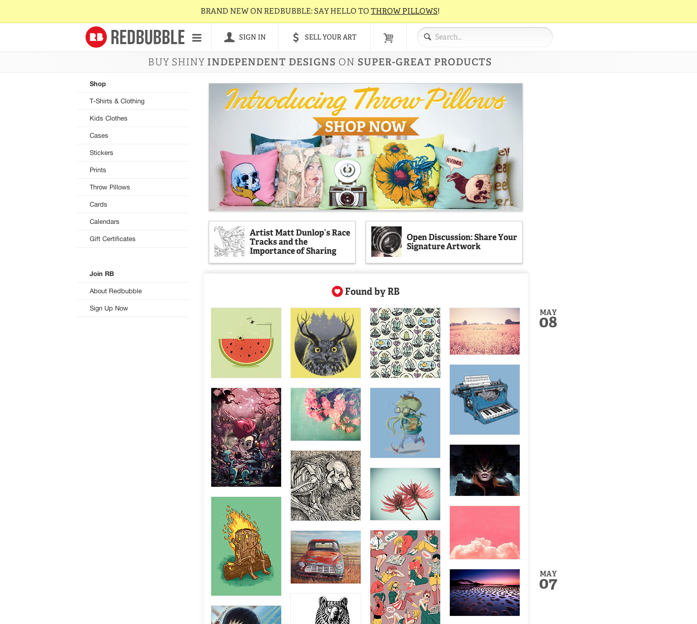
05/08/14
My piece "Bad Day Log" was featured on redbubble's home page!
Bad Day Log

05/05/14
Bad Day Log
Sometimes, logs have bad days too. Another Society6 and Redbubble Print now available!
Purchase a print on Society6.com | Purchase a print on redbubble.com | Like this on Tumblr
Happy Birthday Shark!

05/05/14
Happy Birthday Shark
Fact: Sharks love birthdays.
Purchase a print on Society6.com | Purchase a print on redbubble.com | Like this on Tumblr
Super Coffee

05/05/14
Super Coffee
Up up and CAFFEINATE!
Purchase a print on Society6.com | Purchase a print on redbubble.com | Like on Tumblr
Happy Birthday Shark on Redbubble!
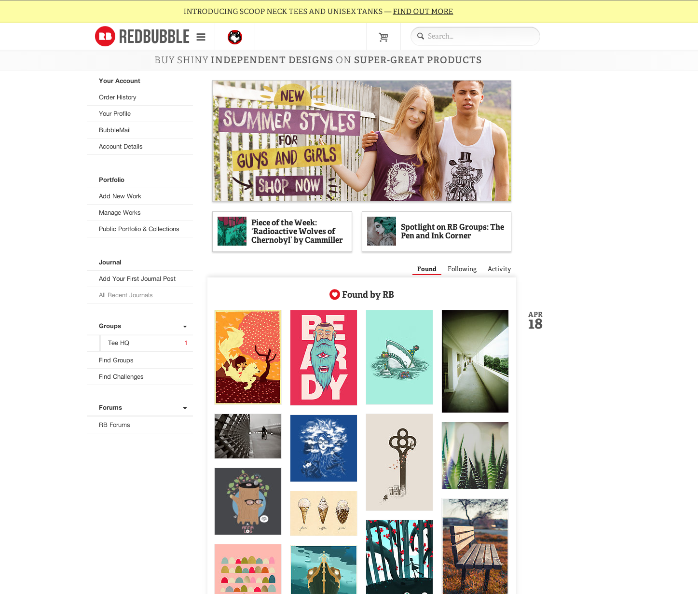
04/18/14
My piece "Happy birthday Shark" was featured on redbubble's home page!
Logstache Featured on Redbubble!
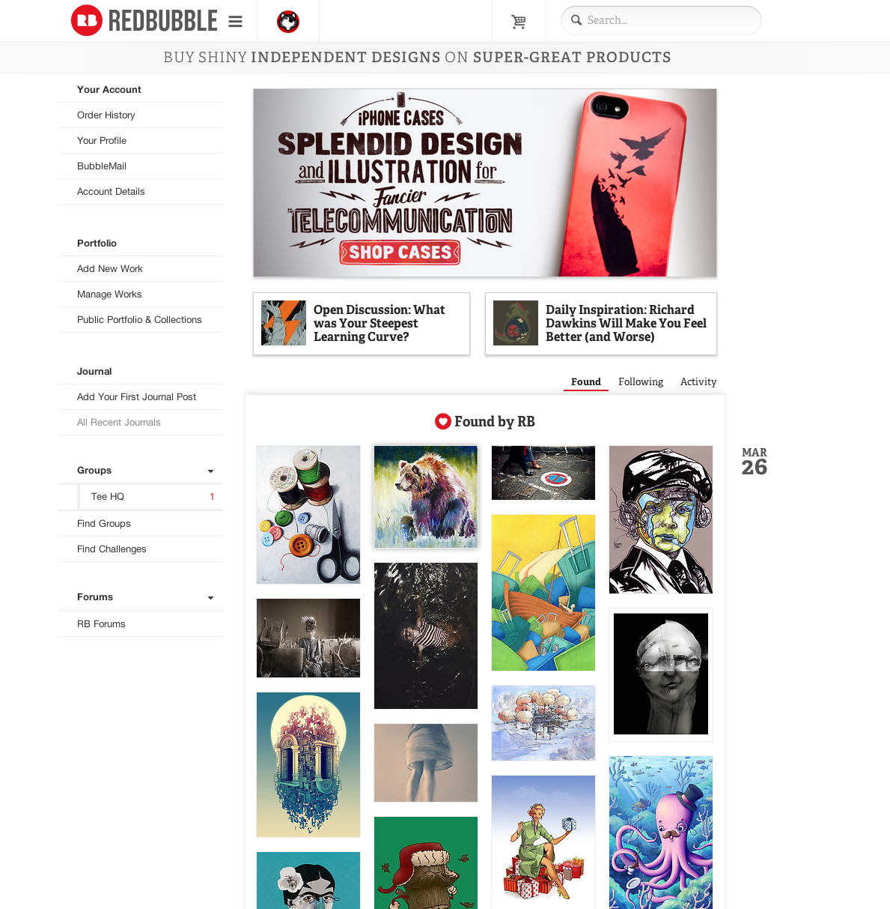
03/24/14
My design "Logstache" was featured on the redbubble home page.
Crowberus Featured on Redbubble
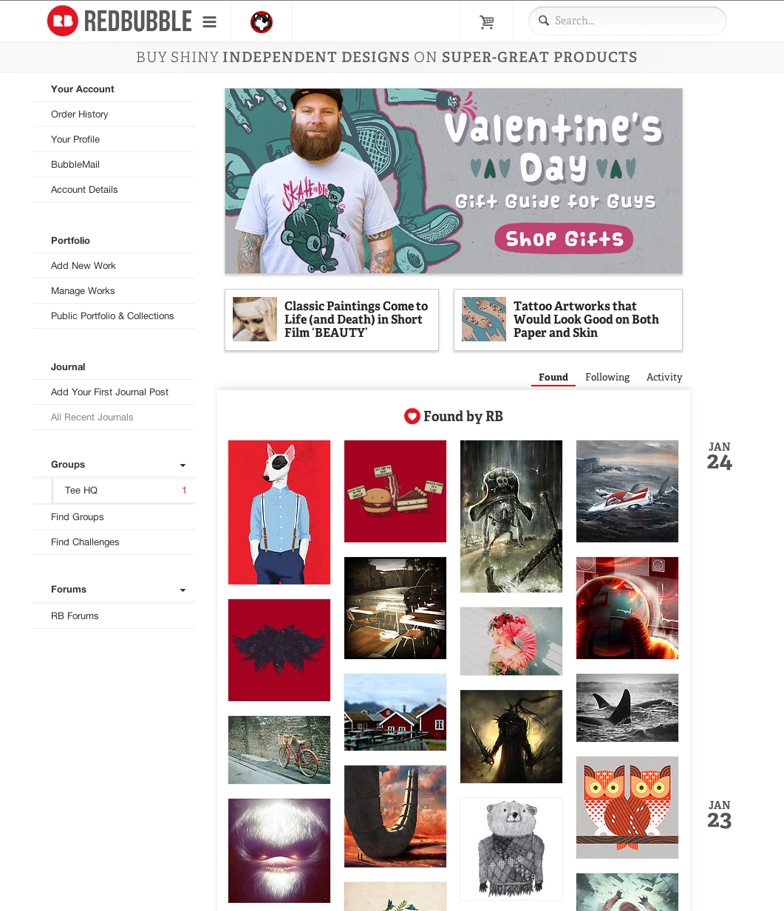
01/24/14
My piece "Crowberus" was featured on the Redbubble home page!
On the Tumblr Radar!
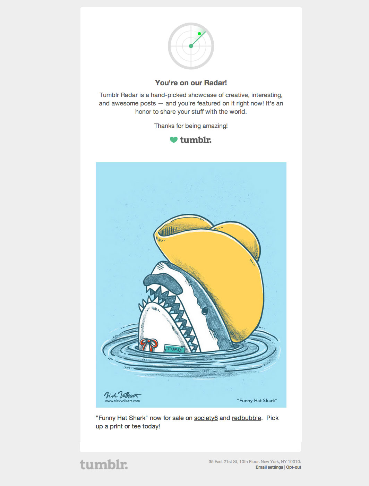
01/23/14
I woke up the morning of January 23rd to my email and phone blowing up with tumblr notifications, and here my illustration "Funny Hat Shark" was featured!
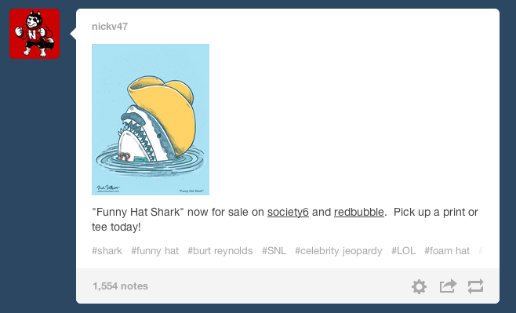
As of 06/08/14 it has 1,596 notes!
Daily Robots for October

10/12/13
Daily Robots: my "make something cool everyday" project. For the month of October I'm doing 31 different robots!
Check all of my past robots on my site right here.
Get Daily updates of my work on my Facebook Page and my Tumblr. Beep Bop Boop!
Characterized
CHARACTERIZED Chicago 2013 Recap from Cut&Paste on Vimeo.
07/26/13
I recently took place in the live sketching event "Characterized" by Cut & Paste! Check the video and some pics from the event on their event page here.
Real Play Challenge: Now Scoring

05/04/13
A tee design to encourage "Real Play" for today's youth. Now scoring on Threadless! Vote for me here.
Daily Robots!

05/04/13
Daily Robots: my "make something cool everyday" project.
Check all of my past robots on my site right here.
Get Daily updates of my work on my Facebook Page and my Tumblr. Beep Bop Boop!
Danger Huskie Pin!


05/04/13
Tiffany Ambrose, aka "TheInfamousBaka", aka "Polite Yet Peculiar" Made me a great "Danger Huskie" pin. Check her work out on Facebook and Tumblr.
My first Threadless Print!

10/18/12
At long last, I've finally been printed on Threadless!
Click here to pick up a Texas Chainsaw Astronaut: New Moon tee here.
Nature Walk

07/02/12
Finally broke my threadless subbing silence with a new one called "Nature Walk"
Redbubble

06/10/12
The friendly and amazing people at Redbubble.com took me out Tuesday (6/5/12) for a great dinner here in Chicago and to discuss their site.
They were also gracious enough to print my works on some sample items (pictured above).
I want to thank them again for showing me a nice night on the town!
Audioshock

04/20/12
Hey! I did the album art for an up and coming electro rock band out of Kent in the UK called "Audioshock", their album "Closure" is now available on iTunes. Download it here. Copies of the CD are also for sale on their bigcartel store if you're interested in a physical copy.
Check em out!
» Purchase a physical copy here.
» Download a copy off of iTunes here.
» Follow them on Facebook
» See more details of the art on Behance.net
To all the single ladies...

04/16/12
"Dear Future Girlfriend" still going strong!
Join in on the fun!
my tumblr blog: connect/follow me here.
my twitter feed: follow my tweets here.
become a "fan" on facebook: "like" dearfutureGF here.
Honey Badger

04/08/12
Updated my FB timeline, did a pun on the "wizard turned you into a whale" meme. Hope you dig.
The Polka Dot

04/08/12
Posted prints, iPhone cases, cards, and iPad skins of my design "The Polka Dot" at Society6.com
Odd Numbers

04/07/12
Posted prints, iPhone cases, cards, and iPad skins of my design "Odd Numbers" at Society6.com
Set In Motion Album Art


03/12/12
Did the album art for an up and coming little band out of Australia called "Set in motion", their album "The Feeling of Our Time" is now available on itunes and for presale if you're interested in a physical copy.
Pick it up on iTunes
Pre-Order a physical copy here
Follow them on Facebook
Two Remake Subs
02/04/12
Did a couple remakes for the remake challenge I organized on Threadless:

and

Skull on Black

01/20/12
New print!
Available as iphone cases, laptop skins and print at Society6.com
Also available as various prints at deviantart.com
Dear Future Girlfriend
08/20/11
This is a thing I started on facebook that I decided to roll into it's own blog. I call it "Dear Future Girlfriend"
Join in on the fun!
my tumblr blog: connect/follow me here.
my twitter feed: follow my tweets here.
become a "fan" on facebook: "like" dearfutureGF here.
Now Voting: A Spacesuit...
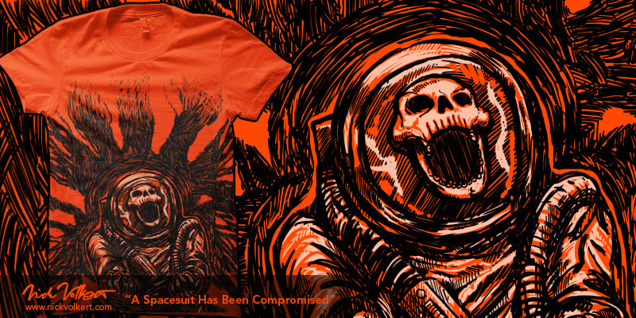
08/20/11
First entry for the Threadless Horror 3 Challenge
Pick up an iphone case, print and laptop sleeves at my Society6.com store.
NEW PRINT: The Toughest Tree

08/20/11
Round 3 victor of Threadwars 4!
Print available at the following sites:
Toughest Tree: available as an iphone case, print and laptop sleeves at my Society6.com store.
Prints also available at Artflakes.com
Prints, mags, and canvas prints at my deviantart.com store

Zombie x 3!
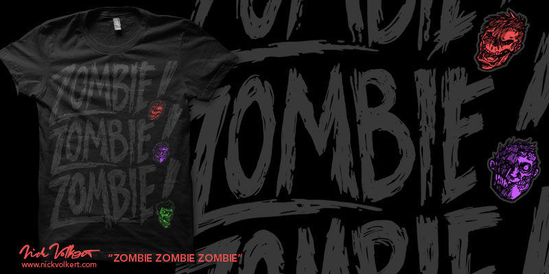
08/09/11
Just finished: First "Three Words" Sub: "ZOMBIE ZOMBIE ZOMBIE".
Prints available at Society6.com
NEW PRINT: The Wonder Chainsaw

08/09/11
The Dreams of the Wonder Chainsaw: Now available at my Society6.com store.
City Top
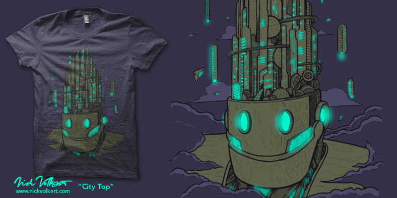
07/05/11
Just finished: first entry for Threadwars IV (hopefully not the last).
Prints available at Society6.com
Prints, canvases and magnets available at deviantart.com

Lions
05/04/11
First sub for the Kid's challenge on Threadless. This little sea lion just wants to be a big cat!
Blog work

04/16/11
Did an illustration and styled Samuel Wilson's blog about working as a bricklayer in England.
3CD - Now Live!

03/09/11
The site for a local Chicago Design group 3CD (Three Communication Design) is now live! I did the coding for this based off their design.
Monday Comics: First Edition.

03/06/11
Starting a new series of comics based on my least favorite day of the week: MONDAY.
Read my Monday Comics Here
A tee for Australian rocker Matt Casey

03/05/11
Tee design for Australian rocker Matt Casey, just finished today!
Society6 Printing Process - Lumbermancer Tee
Society6 Stretched Canvas - a day in the life from Justin Wills on Vimeo.
02/23/11
See the behind the scenes action of Society6, and keep an eye out for my "Lumbermancer" tee on the green tee.
Artflakes

02/22/11
I made a few pieces for sale on the German "Artflakes.com" site: Check it out here!
Odd Numbers
Some very ODD numbers need your votes on Threadless to get printed.
Penguins: A threadless collab
12/10/10
My first Threadless collab. I had UK's Randyotter3000 give me a hand on this design.
Burgers don't dig humans

12/08/10
for the "re-make" community challenge. Mr Burger doesn't dig the "man flesh".
DeviantArt Sale and Free Shipping at Society6 Thru Sunday
11/26/10
Society6 is offering free shipping on items through Sunday. Check my stuff here.
Deviantart.com is offering 20% off through Sunday on art prints, photo prints, wrapped canvas, and post cards. Check my stuff here.
The Snowmaker
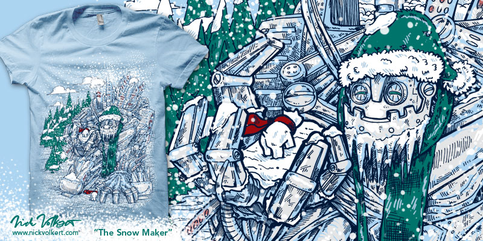
11/10/10
My second round entry to Threadwars III.
Texas Chainsaw Astronaut: New Moon
11/9/10
For 10/10/10, maybe, hopefully, I dunno.
There is no space, there are only chainsaws and death.
Crisis on Infinite Notebooks
11/6/10
The doodles in your school notebook are in a all out war! Squiggly Tornadoes! Stick Men! Smiley Faces! Random Geometric Shapes! Mass Hysteria! One will reign supreme!!!
Lumbermancer: Now in B/W!

10/28/10
The Lumbermancer is now available as a b/w art print on society6!
Check it out on DeviantArt on sale!
"Mr. Bear": Now available as a tee/hoodie

10/26/10
Mr Bear's Nature hat now available as a tee and hoodie at Society6!
Also available in a wide variety of colors for tees and hoodies at Redbubble.com!
The Secrets of Space: Up for Voting!
10/26/10
My design "The Secrets of Space" is now up for voting:
Afterglow

10/24/10
The Australian band For Our Hero dropped their album "Afterglow" today on iTunes.
Then rock the tunes and check out the album art I did on your ipod!
Or better yet, pick up a hard copy and enjoy all the album art I created. Pick one up here.
Circusbot: Now Wearable

10/22/10
My design "Circusbot" is now available as a tee and hoodie @Society6
It is also available @Redbubble.
Feel free to check out my other rad things I have up so far in my Red Bubble gallery.
10/20/10
Round 1 victor of ThreadwarsIII, and proud to say, my HIGHEST Threadless score ever!!!
Stumpystache: Help promote!
09/19/10
Entry for the "Movember" challenge on Threadless.
Zombie Mario vs. Re-animated Abe Lincoln

09/19/10
Entry for the "random awesome works" challenge on Threadless. I had to make a shirt with "zombie, Mario, skull, and Abe". This is what I came up with!
Two Days To Go!
09/19/10
Entry for the "random awesome works" challenge on Threadless. I had to make a shirt with "zombie, Mario, skull, and Abe". This is what I came up with!
Foiled again!
08/23/10
The semi round of the non-alumni finals have come and gone and I'm the second best the second time in a row. In any case check out my submissions to the semi Round of THREADWARS II submission
Cloud City
08/09/10
Another submission finally done scoring at Threadless for THREADWARS II.
Illinoisjevich Returns!
07/26/10
Illinoisjevich is now for sale as a tee over at Society6. Available in Natural, Heather Grey, Light Blue, Lemon, White, Grass, Pomegranate, and Athletic Blue. It's also available as an ipod case, print, and laptop skin. Get it now.
I also made it available as a art print at Deviant art. You can get a print, stretched canvas print, or even just a magnet. Check it out here.
Zip Ups
07/13/10
Threadless Love Zip-Ups Submission!
Circusbot wins!
07/11/10
Threadwars2 started up, and my entry "Circusbot" won the first round! It also got my personal best score: a 3.26!
I want your skull

06/30/10
I entered a greyscale work of the "Lumbermancer" for the Zine "I want your skull" and it's finally been printed and for sale
Lumbermancer grows legs

06/30/10
I entered a print of the Lumbermancer design I originally did for Artpentry on Society6 and it's taken on a life of it's own!
See it featured on "The Beard Revue" Blog
Buy a Tee, Print, iPhone Cover, or Laptop Sleeve of "The Lumbermancer" @ Society6
Abstract Community Challenge

06/30/10
I organized an Abstract Community Challenge on Threadless and it's in full swing! Had a few designers post their great designs for the challenge and most are up for voting!
Society 6
06/20/2010
I opened an account on Society6, you can purchase some of my past paintings as prints or iPhone cases
Coffee Lovers!
06/07/10
Threadless Love Coffee Submission!
Threadwars!
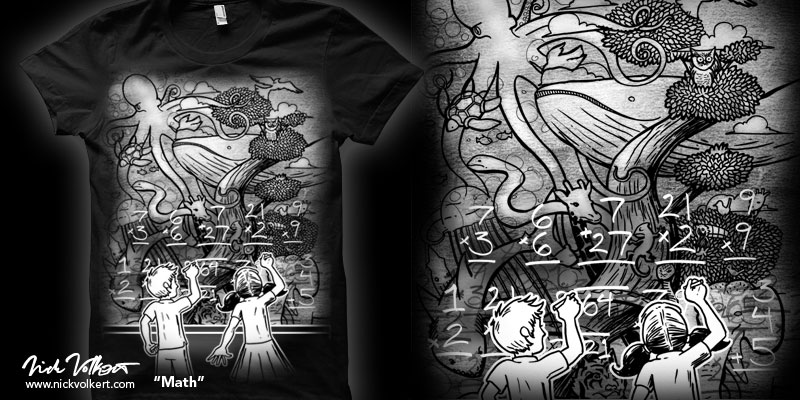
06/04/10
AlexMDC's Community Challenge "THREADWARS" is done...for me anyway. Lasted four rounds which included the big "Non-Alumni" Final Round! Check out all the work I did.
Multiple "Minamalist" Designs Up!
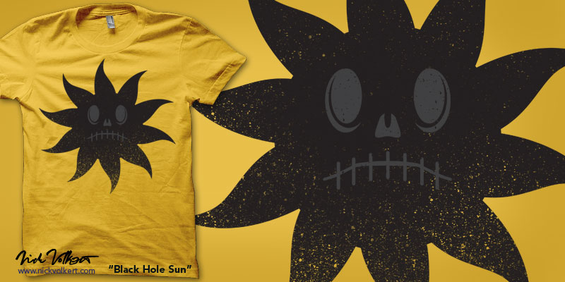
06/06/10
Threadless Minimalism Community Challenge Entries Galore!
Re-make Challenge!
05/03/10
Threadless Community Remake Challenge Submission!
Vevo Contest Submission
04/22/10
Threadless' Vevo Contest
Let there be Tacos!
04/07/10
I love me some Tacos. Submission #2 to the Threadless Flip Flop Contest
Best Friends FURRRRR Ever!
04/07/10
I love me some Tacos. Submission #2 to the Threadless Flip Flop Contest
Texas Chainsaw Astronaut!
02/25/10
Did a wild and crazy general submission on Threadless for this round:
Rocky Mountain Globe Trotters
02/15/10
Submission to the "One Day Without" contest on Threadless:
Submission for Valentines Day up for scoring: Commando Cupid
02/09/10
A little submission for Valentines Day is up for scoring, my first 100% Vector Work submission
Threadless Loves 2K10 Sub #3:
Night Class
01/28/10
Completed my Threadless Loves 2K10 trifecta!!! Sub #3 is up: Night Class. The Owl loves teaching his classes, but they are SOOOOO late!!!
See a larger view here (there's lots of details on this one).
Threadless Loves 2K10 Sub #2: Awesome Hat Club
01/20/10
SECOND submission for the new year! Up for scoring. Threadless Loves 2K10 sub #2! The Awesome Hat Club. Frank's Hat isn't awesome enough (sorry frank).
Threadless Loves 2K10: Bad Hair Day
01/09/10
First submission for the new year! Up for scoring. Threadless Loves 2K10! This totally happened to me one time. PS, I altered the fleshtone a touch for my portfolio, if you notice the difference.
Vote for me HERE!
Threadless Loves Throwback: Trucker Hats, Sock Monkeys and Red Wagons
12/04/09
A throwback to the days when Trucker Hats, sock monkeys, and red wagons ruled my world. Check my submission to Threadless Loves Throwback!
Vote for me HERE!
Blog Feature

12/03/09
Kelly Egger, a friend of mine from my NIU MFA days, was kind enough to feature me in her blog titled "Mixed Media Obssions"
See a post about my attempts to get printed at Threadless
See post #2 about some of my fine art work
Threadless Loves Throwback: Big Wheelers
11/25/09
Remember riding your big wheel as a kid? The crackle of gravel under those plastic tires? Well I do, and nothing compares with it in my opnion. Check my submission to Threadless Loves Throwback!
Vote for me HERE!
Demons demons demons
11/18/09
First submission to Design By Humans. Apparently it resembles Abe Lincoln, to me it was more Vincent Price, in any case hopefully you can get past that and dig on my design
Vote for me HERE!
Time Flies
11/17/09
Like literally. Be sure to vote for my most recent Threadless Submission
Score me HERE!
Love and Snowballs
11/10/09
Another Threadless Submission, be sure to vote for me
Score me HERE!
Lumbermancer
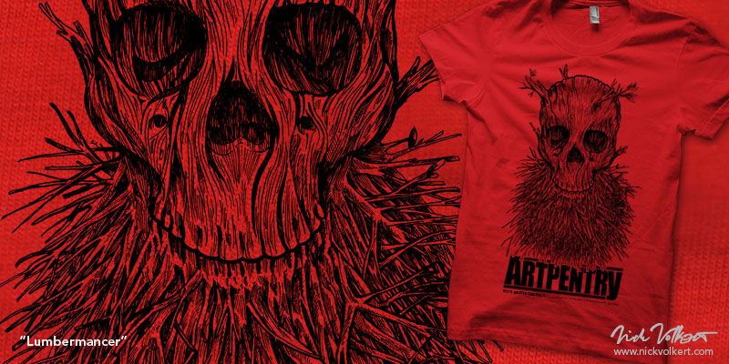
11/10/09
This Friday the 13th (11/13/09), come grab yourself a "Lumbermancer" tee I designed for Artpentry, 1827 S Halsted, Chicago, IL
Sizes S-XL available $15, only 12 available so be sure to contact me if you want one!
Love some Geeks

10/07/09
My submission "protect your harddrive" has two days left of scoring, sign in and give me a $5!
Vote here!
Beard of Birds still for sale
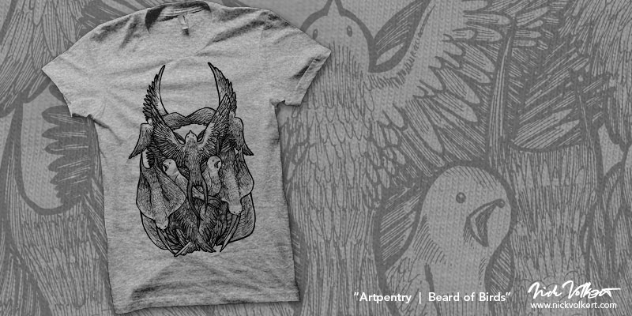
09/04/09
Shirts of my "Beard of Birds" shirts still available at Artpentry,
Chicago, IL. Drop Floyd a line and tell him which size you'd like. Men's sizes
XL, L, and M for sale, Women's sizes available upon request.
Crowberus up for scoring!

09/04/09
Threadless Loves Horror part DEUCE. This is my submission to the contest called "Crowberus". Do me a favor and vote!
See me online

06/18/09
This is a project I completed a while ago, nonetheless, I discovered the
work on the Glenview Park District Website. See the Flick Pool online
here. Then check out the Roosevelt Pool here. See details of these works
and larger versions here.
GCWF Site Refresh

06/12/09
My GCWF (the comic strip I used to draw) got a much needed facelift. Check it out here.
Vote for my Illinoisjevich Tee!

05/9/09
I submitted my FIRST tee design to threadless.com and it's finally up for voting!
Create an account, and give my tee a $5 and say that you want to buy it!
It'll help me out a ton!!!
Color a Potbelly

03/11/09
So I go to Potbelly's website (the awesome sandwich place) and low and behold the activity sheets I illustrated are up
for downloaad! Check
em out! Color em in!
Fine Art Mini-site is up and running!

02/25/09
All of my Fine Art, all in one spot. My
fine art portfolio site is now live! I have full views of all my work, and links to my print store if
you like what you see you can pick up a copy. Also, I listed suggested
prices if you want to own the real deal. There are still works up in
the fine art section of my portfolio, but if you want to see all my paintings,
drawings, and digital fine arts, you'll have to visit
here.
Thursday Treat, just in time for Fall!

10/02/08
It's baaaaaack. Yup, the good ol' Thursday Treat has returned with new weekly installments. The inaugural comic is about NIU's mascot, Victor E. Huskie. Who is the man behind the mask? Learn all about it here.
Gone Clean, Wholesome Fun

10/01/08
I made a little comic when I was attending NIU called "Gone Clean, Wholesome Fun" that appeared in the pages of the Northern Star. Then two years after I graduated with my Masters Degree in Fine Art I made a website archiving all of those cartoons. Check them out here. Start at the Fall 2004 semester to get the full story. Or get to your favorites by category. Tell your friends!
Franktrankina.com
09/29/08
I'm pleased to announce that Franktrankina.com is up and live! I created this site for my professor who was my advisor during my time at NIU in pursuit of my Masters Degree. He designed it, I coded it and put it together. Check it out!
All that howl

08/19/08
This has been up for a while, but check out some unflattering cartoons I did of some certain politicians and their campaign eating habits on the blog All that Howl. I did four toons. Here's 1, Here's 2, Here's 3, and of course, Here's 4. Check em out.

{kind=link}
Bowler Hat Party

04/25/08
I displayed work at En-Vent Gallery in Chicago as a part of Factio Magazine's Artropolis Post Party. Check out the article here. Check out an addtional article (with more event photos) here.
A tribute to those at NIU 02.14.08

02/17/08
As a two-time alumnus of Northern Illinois University the recent shootings that occured on 02.14.08 deeply shook and disturbed me. To address this, for my part, I made a small design piece in tribute to the wounded, witness, and the fallen victims of this horrific tragedy. View it here.
Decomp
02/02/08
My piece "The Villain" is featured in the February edition of Decomp, an online literary magazine. Be sure to check it out!
Re-Introducing the Thursday Treat

01/05/08
Like people need to breathe, I need to do cartoons. So I'm creating the Thursday Treat once again, now appearing as a weekly web comic. Check it out here. Tell your friends.
Heading to the Orange Alert

01/05/08
The editor of the web-blog "What to wear during an orange alert", Jason Behrends, hit me up to re-design the header for his blog, check it out here. I should be up for the next couple of months so be sure to check it out, and read his excellent art blog. I designed a few other headers, see the ones he didn't pick, click here.
Gone Clean Wholesome Fun

01/01/08
I created a little comic a while ago called Gone Clean Wholesome fun. I've accrued some ideas for the 2008 year and will be hitting it once again and busting out comics on a weekly basis. Here's to that and here's to hoping I get syndicated! Check out the teaser site here.
Merry Xmas!

12/24/07
Merry Xmas! I've compiled all of my Christmas and Holiday related works in this little mini-site: www.nickvolkert.com/xmas. This site is best viewed in pretty much any browser other than Internet Explorer.
New work

11/10/07
New works posted. Check out "Alone with the Sea", "The Villain", "The Color of Passion", and "Running with the Devil",
A small show...

11/04/07
I have a small gallery opening at the House Cafe on November 14th. Featuring some new work, some old work, me, and maybe you.
On the Orange Alert...
10/17/07
I'm featured in the "artist of the week" section of this week's "What to wear during an orange alert" an art and music blog. In my interview I mention Karen Jacobs as an influence in my career as a painter, she mentions me in her blog, how cool is that?
Deamon Tweak...

08/20/07
Here's a cd insert/comic I created some illustrations for. My friend Rich Pulfer wrote the script. It's seven pages of sequential joy (plus the sketches n' stuff). ROCK IT OUT.
Website pages that are really popular...
07/25/07
Check out some pages I did for Banco Popular's gift card and credit cards on their website:
• Banco's credit card intro page.
• The Classic Card and the FAQ page.
• The Platinum Card.
Also check out the Gift card pages, the intro, and learn more page.
Yet another weblisting for yours truly...
06/02/07
Check my Design Firm Listing! You want me to do some work for you. You do. C'mon. C'mon...
They Love Dreams...
06/01/07
I'm Currently Working on site at Banco Popular as a Web Production Artists. Check out what I'm working on here.

The last art show(for college)...
Northern Illinois University
Master of Fine Arts Exhibition
"Proximity"
ARC Gallery
May 2nd - May 26th
Opening Reception: Friday, May 4th from 6-9 PM
Gallery Hours: Wed - Sat 12-6, Sun 12-4, and by appointment.
For more information click here.